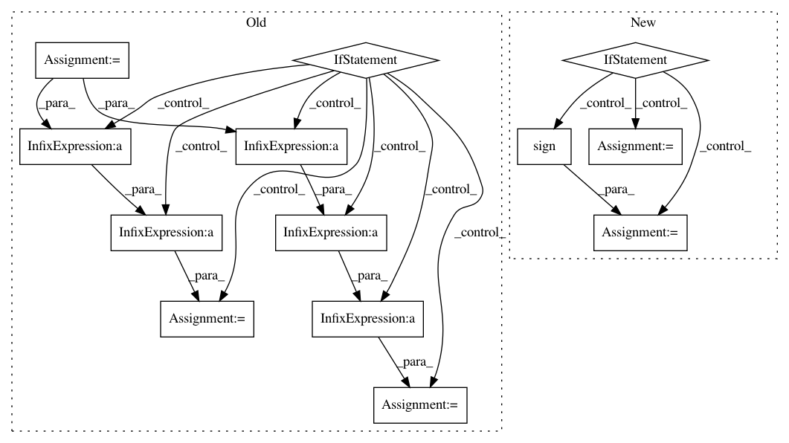

914ac784d0a616c4f6a030fc8130281269c74432,acoular/fbeamform.py,BeamformerBase,calc,#BeamformerBase#Any#Any#,218
Before Change
// prepare calculation
kj = 2j*pi*self.freq_data.fftfreq()/self.c
numchannels = self.freq_data.numchannels
e = zeros((numchannels), "D")
r0 = self.r0
rm = self.rm
h = zeros((1, self.grid.size), "d")
// function
beamfunc = self.get_beamfunc()
if self.r_diag:
adiv = 1.0/(numchannels*numchannels-numchannels)
scalefunc = lambda h : adiv*multiply(h, (sign(h)+1-1e-35)/2)
else:
adiv = 1.0/(numchannels*numchannels)
scalefunc = lambda h : adiv*h
for i in self.freq_data.indices:
if not fr[i]:
csm = array(self.freq_data.csm[i][newaxis], dtype="complex128")
kji = kj[i, newaxis]
After Change
csm = array(self.freq_data.csm[i][newaxis], dtype="complex128")
kji = kj[i, newaxis]
beamformerOutput = beamformerFreq(False, steerVecFormulation, self.r_diag, normFactor, (self.r0, self.rm, kji, csm))
if self.r_diag: // set (unphysical) negative output values to 0
indNegSign = sign(beamformerOutput) < 0
beamformerOutput[indNegSign] = 0.0
ac[i] = beamformerOutput
fr[i] = True
def synthetic( self, f, num=0):
In pattern: SUPERPATTERN
Frequency: 3
Non-data size: 13
Instances
Project Name: acoular/acoular
Commit Name: 914ac784d0a616c4f6a030fc8130281269c74432
Time: 2017-10-07
Author: tom.j.gensch@campus.tu-berlin.de
File Name: acoular/fbeamform.py
Class Name: BeamformerBase
Method Name: calc
Project Name: IBM/adversarial-robustness-toolbox
Commit Name: 575373a1b7a590cbc06bd03137a4a937b7f4d808
Time: 2020-04-22
Author: M.N.Tran@ibm.com
File Name: art/attacks/evasion/projected_gradient_descent/projected_gradient_descent_tensorflow_v2.py
Class Name: ProjectedGradientDescentTensorflowV2
Method Name: _projection
Project Name: acoular/acoular
Commit Name: 212be41d28a7d40ce63d3ad1c5d3c453a83a1f1c
Time: 2017-10-07
Author: tom.j.gensch@campus.tu-berlin.de
File Name: acoular/fbeamform.py
Class Name: BeamformerEig
Method Name: calc